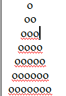

Домашня робота (урок 6)
-
Задача № 1
Відобразити трикутник за допомогою символів «о»
Перейти -
Задача № 2
Інвестор вклав тис. грн на 20 років під 20% річних, а потім на 17 років під 27% річних. Визначити за допомогою циклів суму, яку він одержить.
Перейти -
Задача № 3
Щоденно спортзал відвідує певна кількість людей. Користувач вводить такі дані: скільки людей відвідало спортзал за день та вік кожного відвідувача. Потрібно вивести вік найстаршого та наймолодшого відвідувачів, а також середній вік всіх відвідувачів спортзалу за день.
Перейти -
Задача № 4
З клавіатури вводяться n чисел та саме значення n. Написати програму, яка підраховує кількість від’ємних, додатних та нульових чисел серед введених
Перейти -
Задача № 5
Задано натуральне число N. Знайти кількість натуральних чисел, що не перевищують N і не діляться на жодне з чисел 2,3,5.
Перейти